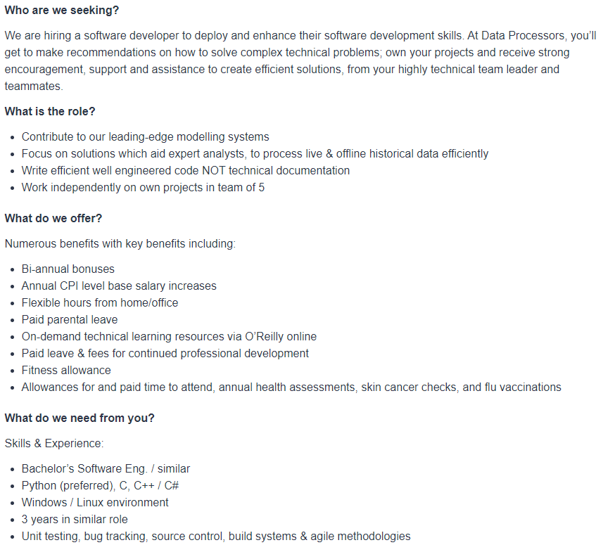

Ideal Job
This job advertisement is for a position at a company called Data Processors, which are a company that models data given to it by its clients in order to extrapolate and predict outcomes under different conditions. This role requires the employee to work in teams of 5 to develop software solutions that will help efficiently and effectively model data.
This position is appealing to me, because, while data modelling might not be the most exciting work, their position is in the Eurika building, which, living in the SE suburbs is easily accessible for me via public transport. Also, they are willing to pay 100,000/year, which is more than fair remuneration for a position that only requires 3 years of work experience. On top of all this, this is a company that clearly cares about its employees, offering allowances for exercise and overall health. this is further shown by visiting their website, where a more detailed list of benefits and activities that they provide can be found.
This job position requires a Bachelor of Software Engineering or similar course, it requires extensive knowledge of Python, C, C++, and C#, as well as 3 years of work experience in a similar role. Currently, I have a fairly detailed understanding of Python and a basic understanding of C and its variants, also, unsurprisingly, I do not have a Bachelor's in Software Engineering, nor do I have any work experience in the industry.
a Bachelor's of Information Technology is different to a Bachelor's of Software Engineering, they both work within the same industry and with similar concepts, especially given the scope of this job position, I would consider them consider them a similar degree. As mentioned before, my current understanding of Python is fairly strong, however, I doubt that it would hold up in the environment described in this job listing. In the same vein, I know basic C# from messing around in the Unity game engine, but again, it would not hold up in a work environment. I hope to gain these skills through doing my Bachelor of Information Technology. Following this, I would hope to get a lower-level job within a similar data-processing company to build work experience within the niche of data processing, as I imagine that someone already experienced in the area of work is more highly sought after than someone who is new to it. This is how I hope to land my Ideal job as a Software Developer at Data Processors.